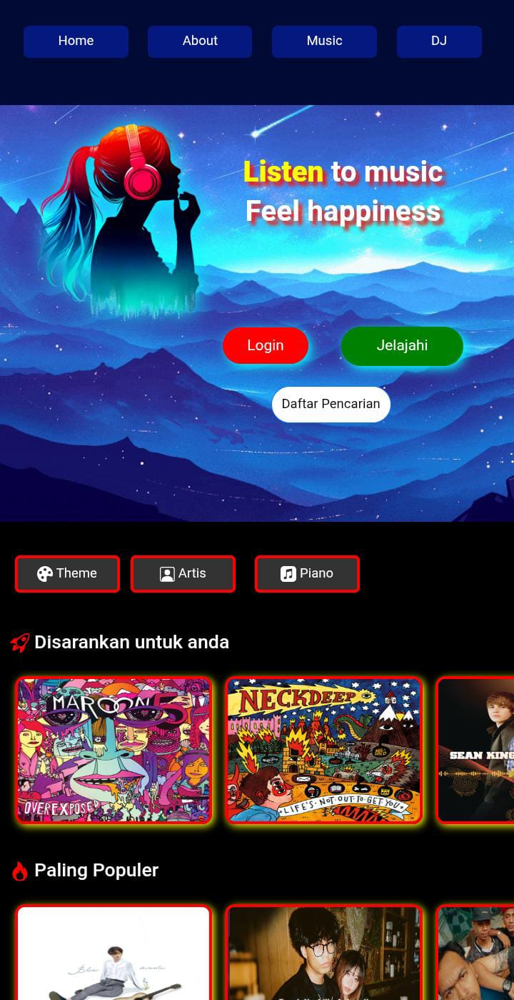

This project is a web-based music application designed to provide a modern and interactive music exploration experience. It features a visually engaging homepage, music category navigation (Themes, Artists, Piano), and lists of recommendations and popular tracks that make it easy for users to discover content matching their interests. The application includes login functionality, a music search feature, and exploration controls to enhance the user experience. The interface utilizes a dark theme with appealing illustrative visuals, ensuring both comfort during use and a professional appearance. Developed using HTML, CSS, Bootstrap, and JavaScript, the project focuses on UI/UX, responsiveness, and clean layout management, serving as an excellent example of frontend web development for building modern music applications.